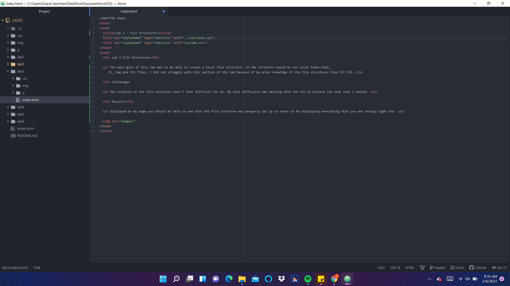

The main goal of this lab was to be able to create a local file structure. In the structure would be our local index.html, JS, img and CSS files. I did not struggle with this portion of the lab because of my prior knowldge of the file structures from CST 251.
The creation of the file structure wasn't that difficult for me. My only difficulty was messing with the CSS to achieve the look that I wanted.
Displayed on my page you should be able to see that the file structure was properly set up in order to be displaying everything that you are seeing right now.
